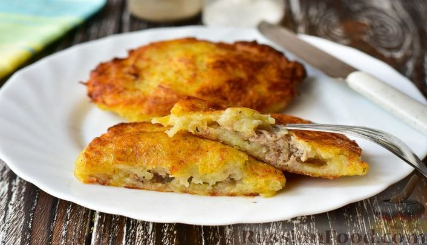

| Название блюда | Оценка блюда | Ссылка на рецепт блюда | Фото блюда |
|---|---|---|---|
| Жареная рыба | 7 | Рецепт жареной рыбы от Анаргул Кудайбергеновой | |
| Цыпленок с соусом парментье | 9 | Цыпленок с соусом парментье | |
| Белорусские колдуны | 10 | Белорусские колдуны |  |
| Мясо по-французски | 9 | Мясо по-французски | |
| Тефтели в сливочном соусе | 7 | Тефтели в сливочном соусе | |